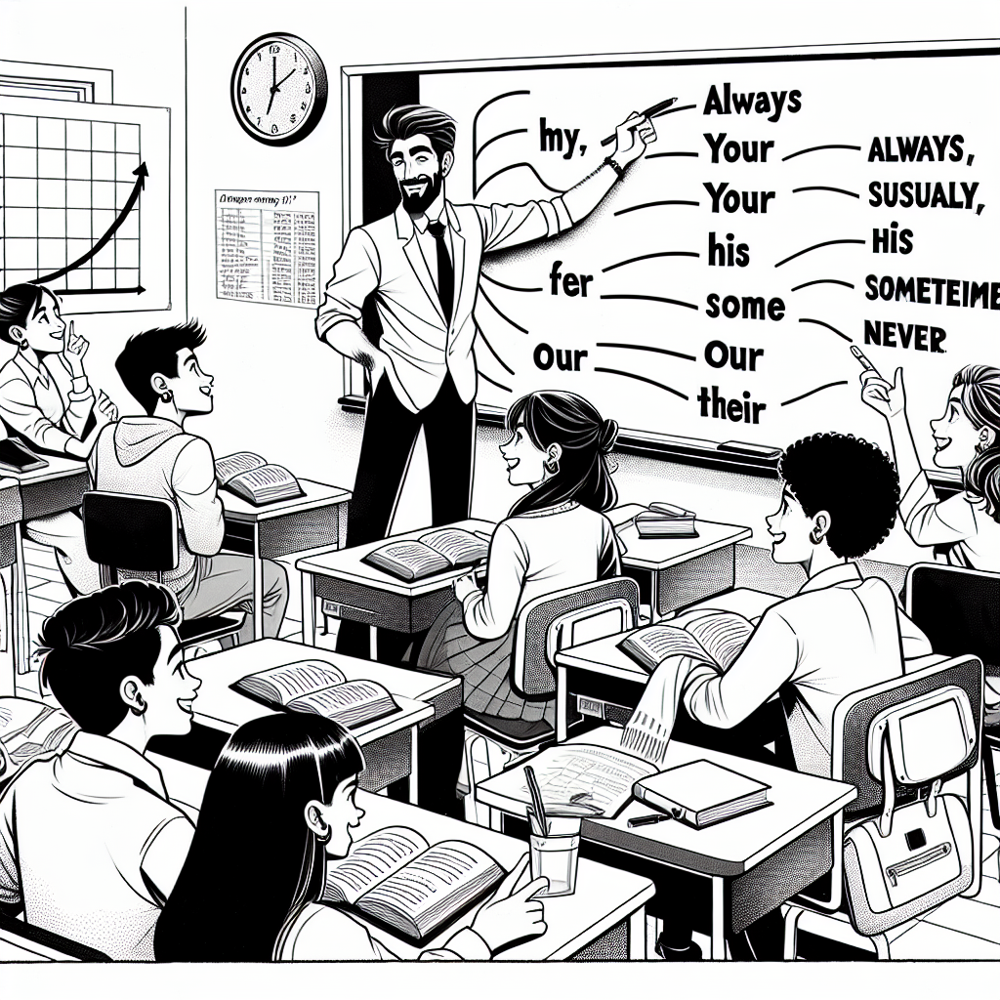
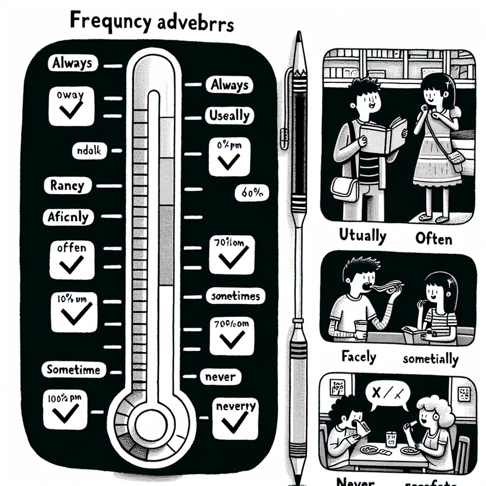
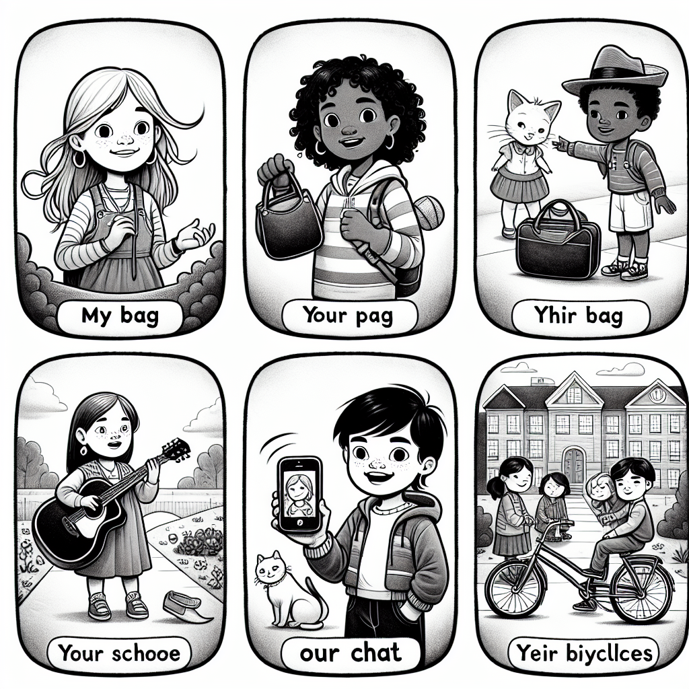
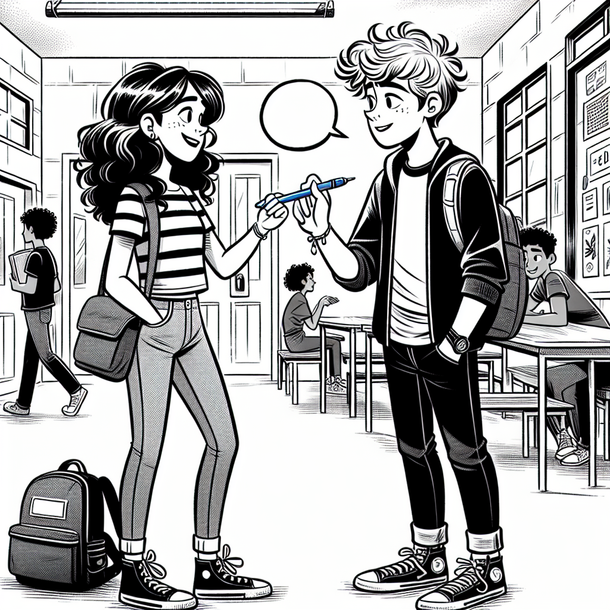

Frequency Adverbs & Possessive Adjectives and Pronouns
In this chapter you will learn how to say how often you do things using frequency adverbs, and how to talk about what belongs to you and others using possessive adjectives and pronouns. By the end, you will be able to describe your habits and talk about belongings with confidence.

Frequency Adverbs
Frequency adverbs tell us how often something happens. They go from 100% (always) to 0% (never).
| Frequency | Adverb | Português | Example |
|---|---|---|---|
| 100% | always | sempre | I always eat breakfast. |
| 90% | usually | geralmente | She usually walks to school. |
| 70% | often | frequentemente | We often play football after class. |
| 50% | sometimes | às vezes | He sometimes forgets his homework. |
| 10% | rarely / seldom | raramente | They rarely eat fast food. |
| 0% | never | nunca | I never drink coffee. |

The position of a frequency adverb depends on the verb in the sentence:
| Rule | Position | Example |
|---|---|---|
| With most verbs | BEFORE the main verb | I always eat breakfast. |
| With the verb be | AFTER the verb be | She is always happy. |
| Sometimes (flexible) | Can go at the beginning or end | Sometimes I walk to school. / I walk to school sometimes. |
Formula:
- Subject + adverb + main verb: "I usually study at night."
- Subject + be + adverb: "He is never late."
We can also express frequency with time expressions. These usually go at the end of the sentence.
| English | Português | Example |
|---|---|---|
| every day | todo dia | I study English every day. |
| every week | toda semana | We have a test every week. |
| once a week | uma vez por semana | I go to the gym once a week. |
| twice a month | duas vezes por mês | She visits her grandparents twice a month. |
| three times a year | três vezes por ano | They travel three times a year. |
| on Mondays | às segundas-feiras | We have English class on Mondays. |
Examples in Context
I always brush my teeth before bed.
Eu sempre escovo os dentes antes de dormir.
My teacher is usually very patient.
Minha professora geralmente é muito paciente.
We often eat rice and beans for lunch.
Nós frequentemente comemos arroz e feijão no almoço.
I go to Escola Incluir twice a week.
Eu vou à Escola Incluir duas vezes por semana.
She never eats breakfast. (= She does NOT eat breakfast, ever.)
Ela nunca toma café da manhã.
In English, never already has a negative meaning, so we do NOT use "not" with it:
- "I never eat fast food." (CORRECT)
- "I don't never eat fast food." (WRONG — double negative!)
In Portuguese, "Eu nunca não como..." also sounds wrong. The same logic applies in English.
Suggested time: 25 minutes
Warm-up: Write daily activities on the board (brush teeth, eat breakfast, play video games, read books, etc.). Ask students "How often do you...?" and help them use the correct adverb. Draw a simple frequency scale on the board.
L1 interference: In Portuguese, adverbs of frequency are more flexible in position. Students may place them at the end of the sentence ("I eat always breakfast") instead of before the verb. Emphasise the two rules: before the main verb, after "be".
Rewrite each sentence with the frequency adverb in the correct position.
Choose the correct time expression from the box to complete each sentence.
Options: every day | once a week | twice a month | on Saturdays | three times a year | every morning
Possessive Adjectives
A possessive adjective shows who something belongs to. It comes before a noun.
| Subject Pronoun | Possessive Adjective | Português | Example |
|---|---|---|---|
| I | my | meu / minha | My name is Ana. |
| you | your | seu / sua / teu / tua | Is this your book? |
| he | his | dele | His sister is tall. |
| she | her | dela | Her dog is friendly. |
| it | its | dele / dela (coisa/animal) | The cat licked its paw. |
| we | our | nosso / nossa | Our school is great. |
| they | their | deles / delas | Their house is big. |
Important: Possessive adjectives do NOT change for singular/plural or masculine/feminine. We say "his book" and "his books" (NOT "his books" and "hises books").

Examples in Context
My mother always cooks dinner at seven.
Minha mãe sempre prepara o jantar às sete.
His father is a doctor. Her mother is a teacher.
O pai dele é médico. A mãe dela é professora.
Our English class is always fun.
Nossa aula de inglês é sempre divertida.
Their children never eat vegetables.
Os filhos deles nunca comem verduras.
The dog wagged its tail happily.
O cachorro abanou a cauda dele alegremente.
In Portuguese, "seu/sua" can mean his, her, your, or their depending on context. In English, each person has a specific possessive adjective:
- his = dele (always refers to a male person)
- her = dela (always refers to a female person)
- your = seu/sua (refers to the person you are talking to)
Do not confuse its and it's:
- its = possessive (The dog ate its food.)
- it's = "it is" (contraction) (It's a beautiful day.)
Suggested time: 20 minutes
Warm-up: Point to students' belongings and ask "Whose pen is this?" Then model: "It's HIS pen. It's HER notebook." Have students practise in pairs pointing at objects and identifying the owner.
L1 interference: The biggest challenge is his vs. her. In Portuguese, "seu/sua" agrees with the noun, not the owner. In English, we always match the possessive to the owner: "Maria loves her cat" (not "his cat"), because Maria is female.
Complete each sentence with the correct possessive adjective: my, your, his, her, its, our, their.
Translate each sentence to English, paying attention to the possessive adjective.
Possessive Pronouns
A possessive pronoun replaces a possessive adjective + noun. It stands alone (no noun after it).
| Possessive Adjective + Noun | Possessive Pronoun | Português |
|---|---|---|
| my book | mine | o meu / a minha |
| your book | yours | o seu / a sua |
| his book | his | o dele |
| her book | hers | o dela |
| our book | ours | o nosso / a nossa |
| their book | theirs | o deles / o delas |
Key difference:
- Possessive adjective: "This is my pen." (before a noun)
- Possessive pronoun: "This pen is mine." (replaces "my pen")
Examples in Context
"Whose bag is this?" — "It's mine." (= It's my bag.)
"De quem é essa bolsa?" — "É minha."
My phone is old. Yours is new. (= Your phone is new.)
Meu celular é velho. O seu é novo.
This book is not his. It's hers. (= It's not his book. It's her book.)
Este livro não é dele. É dela.
That classroom is ours. (= That is our classroom.)
Aquela sala de aula é nossa.
These bicycles are theirs, not ours.
Essas bicicletas são deles, não nossas.
A quick way to remember: if there is a noun right after, use the possessive adjective. If the word stands alone, use the possessive pronoun.
- "This is my pen." (adjective — noun "pen" comes after)
- "This pen is mine." (pronoun — no noun after)
Suggested time: 20 minutes
Activity: Collect objects from students (pens, erasers, notebooks). Hold up each item and ask "Whose is this?" Students answer using both forms: "It's my pen." / "It's mine." This helps them see the difference in real time.
L1 interference: In Portuguese, possessives work differently — "meu/minha" can function as both adjective and pronoun. Students may not see the need for two forms. Emphasise that English uses different words (my vs. mine, her vs. hers, etc.).
Choose the correct option to complete each sentence.
This is _______ notebook. (I)
b) myThis notebook is _______. (I)
a) mineIs this _______ phone? (you)
b) yourThe blue car is _______. (they)
b) theirsShe always brings _______ lunch to school. (she)
b) her"Whose pencil is this?" — "It's _______." (he)
a) hisRewrite each sentence replacing the underlined words with a possessive pronoun.
Complete each sentence with the correct possessive adjective or possessive pronoun.
Dialogue & Reading

Dialogue: After Class
Suggested time: 15 minutes
Activity: Have students read the dialogue in pairs. Ask them to underline all frequency adverbs in one colour and all possessives in another. Then discuss: which possessives are adjectives and which are pronouns?
Read the dialogue above and write T (True) or F (False).
Reading: Our Weekly Activities
At Escola Incluir, every student has their own routine. Let me tell you about some of my classmates and their habits.
My name is Gabriela and I always arrive at school early. My best friend, Thiago, is usually late. His excuse is always the same: "My alarm clock never works!" Our teacher, Ms Santos, is always patient with him, but she sometimes gives him extra homework.
In our class, most students usually bring their own lunch. My lunch is always rice and beans — it's my favourite! Thiago rarely brings his lunch. He usually buys food at the cafeteria. His favourite is coxinha.
After school, we often study together at the library. I always bring my English books, and Thiago brings his Maths books. We help each other: I help him with his English, and he helps me with my Maths. Our study sessions are usually on Mondays and Wednesdays.
On weekends, I sometimes visit my grandmother. She lives far from our house, so we only go twice a month. Thiago often plays football with his friends on Saturdays. He never misses a game! Their team practises at the park near their school every Saturday morning.
Suggested time: 20 minutes (reading + exercises 9-10)
Pre-reading: Ask students what they do every week. Write key activities on the board. Then have students read to compare their own routines with Gabriela and Thiago's.
Reading strategy: First reading for general understanding. Second reading to identify all frequency adverbs and possessives. Students can highlight or underline them.
Read the text about Gabriela and Thiago and answer in complete sentences.
Who is usually late for school?
Thiago is usually late for school.What does Gabriela always bring for lunch?
She always brings rice and beans. / Her lunch is always rice and beans.How often do Gabriela and Thiago study together?
They usually study together on Mondays and Wednesdays. / They study together twice a week.How does Gabriela help Thiago? How does Thiago help Gabriela?
She helps him with his English, and he helps her with her Maths.How often does Gabriela visit her grandmother?
She visits her grandmother twice a month.What does Thiago often do on Saturdays?
He often plays football with his friends on Saturdays.Look at the reading text and complete the table. Find an example of each possessive from the text and write the full phrase.
Writing & Speaking
Write a short paragraph (6-8 sentences) about your weekly routine. Use at least 4 frequency adverbs and 3 possessive adjectives or pronouns.
Include:
- How often you study English
- What you usually do after school
- What your family members often do
- Something you never do
- What you do on weekends
Use Gabriela's text as a model. Remember to place frequency adverbs before the main verb and after the verb "be". Use possessives like my, his, her, our when talking about belongings and people.
Ask a classmate these questions and write their answers. Then report to the class using he/she and the correct possessives.
How often do you study English?
What do you usually do after school?
Do you always eat breakfast? What is your favourite food?
What does your family usually do on weekends?
Is there something you never do? What is it?
How often do you help your parents at home?
Suggested time: 25 minutes (15 for writing, 10 for interview)
Assessment criteria for Exercise 11:
- At least 4 frequency adverbs in the correct position
- At least 3 possessive adjectives or pronouns used correctly
- Correct Simple Present verb forms
- Clear paragraph structure (6-8 sentences)
Exercise 12: After the interview, each student reports to the class using he/she forms and possessives: "Ana always studies English. Her favourite subject is Science. She usually helps her mother on weekends." This practises both third-person forms and possessive adjectives together.
Chapter 5 - Answer Key
Exercise 1: Place the Frequency Adverb
Exercise 2: Complete with a Time Expression
Exercise 3: Choose the Correct Possessive Adjective
Exercise 4: Translate to English
Exercise 5: Possessive Adjective or Pronoun?
Exercise 6: Rewrite Using a Possessive Pronoun
Exercise 7: Mixed Practice — Adjective or Pronoun?
Exercise 8: True or False
Exercise 9: Answer the Questions
Exercise 10: Find the Possessives in the Text
Exercise 11: Write About Your Weekly Routine
Answers will vary. Check for at least 4 frequency adverbs in the correct position (before main verbs, after "be"), at least 3 possessive adjectives or pronouns used correctly, correct Simple Present verb forms, and 6-8 complete sentences.
Exercise 12: Interview a Classmate
Answers will vary. Check that students answered in complete sentences using frequency adverbs and possessives correctly. When reporting, verify correct use of third-person forms and possessive adjectives (his/her).